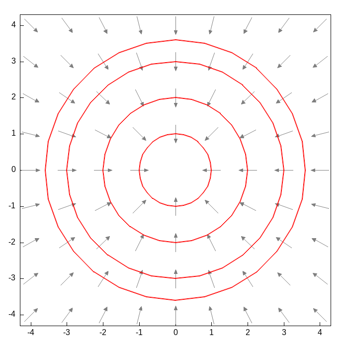

Ecuaciones Homogéneas y Exactas
Simetrías de escala y campos conservativos
1 Dos maneras nuevas de reconocer una ecuación
Hasta ahora hemos resuelto ecuaciones separables y las hemos usado para encontrar familias ortogonales. Pero la mayoría de las ecuaciones \(y'=f(x,y)\) que uno escribe al azar no son separables: \(f(x,y)\) simplemente no se deja factorizar como un producto \(g(x)h(y)\). Esta sección presenta dos maneras distintas en que una ecuación así puede, sin embargo, resolverse por completo: porque tiene una simetría de escala escondida (ecuaciones homogéneas), o porque en realidad es la diferencial total de una función (ecuaciones exactas). En ambos casos el punto no es memorizar una fórmula, sino aprender a reconocer una estructura.
2 Ecuaciones homogéneas
2.1 De las trayectorias ortogonales a un ángulo cualquiera
En la sección de Familias Ortogonales encontramos la familia perpendicular a \(y'=f(x,y)\) reemplazando la pendiente por su recíproco negativo: \(y'=-1/f(x,y)\). Ese es apenas el caso particular en que el ángulo de cruce es de \(90°\). ¿Qué pasa si en cambio queremos que una segunda familia cruce a la primera en un ángulo cualquiera \(\alpha\), el mismo en todo punto de contacto?
Si en el punto \(P=(x,y)\) la primera curva tiene pendiente \(f(x,y)=\tan\varphi\), donde \(\varphi\) es el ángulo que forma su tangente con el eje \(x\), entonces la segunda curva, al cruzarla con ángulo \(\alpha\), tiene una tangente que forma el ángulo \(\varphi+\alpha\) con el eje \(x\). Por la identidad de la tangente de una suma,
\[\tan(\varphi+\alpha)=\frac{\tan\varphi+\tan\alpha}{1-\tan\varphi\tan\alpha}\]
así que la segunda familia satisface esta ecuación (es el problema 10 de la sección 7 del Simmons):
\[y'=\frac{f(x,y)+\tan\alpha}{1-f(x,y)\tan\alpha}\]
Si \(\alpha\to 90°\), entonces \(\tan\alpha\to\infty\). Dividiendo numerador y denominador entre \(\tan\alpha\) y tomando el límite, el término \(f(x,y)/\tan\alpha\) se anula y queda \(y'\to -1/f(x,y)\). La fórmula de trayectorias ortogonales es, entonces, apenas el caso límite \(\alpha=90°\) de esta fórmula más general.
2.2 El ejercicio: cruzar los círculos concéntricos en \(45°\)
Apliquemos esto a la familia de círculos \(x^2+y^2=c\) (problema 11, literal b, de la misma sección). Derivando implícitamente, \(2x+2yy'=0\), así que la familia original satisface
\[y'=-\frac{x}{y}=:f(x,y)\]
Queremos la familia que la cruza en \(\alpha=\pi/4\), es decir, con \(\tan\alpha=1\). Sustituyendo en la fórmula general y multiplicando arriba y abajo por \(y\):
\[y'=\frac{-\dfrac{x}{y}+1}{1-\left(-\dfrac{x}{y}\right)}=\frac{y-x}{y+x}\]
Esta ecuación no es separable: no existe manera de escribir \((y-x)/(y+x)\) como un producto \(g(x)h(y)\). Pero tiene otra propiedad notable. Si reemplazamos \(x\) por \(tx\) y \(y\) por \(ty\), para cualquier \(t\neq 0\), el lado derecho no cambia:
\[\frac{ty-tx}{ty+tx}=\frac{t(y-x)}{t(y+x)}=\frac{y-x}{y+x}\]
porque el factor \(t\) se cancela. Esta invariancia bajo escalamiento (estirar o encoger el plano entero desde el origen no altera la pendiente) es precisamente lo que se llama una ecuación homogénea.
2.3 Ecuaciones homogéneas: la definición general
Una función \(f(x,y)\) es homogénea de grado \(n\) si \(f(tx,ty)=t^n f(x,y)\) para todo \(t\). La ecuación \(M(x,y)\,dx+N(x,y)\,dy=0\) se llama homogénea si \(M\) y \(N\) son homogéneas del mismo grado; en ese caso \(y'=-M/N\) resulta ser homogénea de grado \(0\), es decir, depende solo del cociente \(y/x\) (basta dividir arriba y abajo entre \(x^n\) para verlo).
Geométricamente esto significa algo muy concreto: la pendiente de la ecuación es la misma en todos los puntos de un mismo rayo que sale del origen. Si \((x_0,y_0)\) está sobre una curva solución, entonces \((kx_0,ky_0)\) da exactamente la misma pendiente, para cualquier \(k>0\). Por eso, si escalamos una curva solución completa desde el origen, obtenemos otra curva solución: toda la familia de soluciones es invariante bajo escalamiento, la misma simetría que ya vimos en la ecuación de arriba.
Esa invariancia sugiere el cambio de variable natural: en vez de \((x,y)\), usar \((x,z)\) con \(z=y/x\), porque \(z\) permanece constante a lo largo de cada rayo. Escribiendo \(y=zx\),
\[y'=z+x\frac{dz}{dx}\]
y como el lado derecho de la ecuación original satisface \(F(x,y)=F(1,z)\) (por ser homogénea de grado \(0\)), la ecuación se convierte en
\[z+x\frac{dz}{dx}=F(1,z)\qquad\Longrightarrow\qquad x\frac{dz}{dx}=F(1,z)-z\]
que ya es separable en \(z\) y \(x\). Se resuelve por separación de variables y, al final, se recupera \(y\) mediante \(y=zx\).
2.4 Resolviendo el ejercicio
Para nuestra ecuación, \(F(x,y)=(y-x)/(y+x)\), así que \(F(1,z)=(z-1)/(z+1)\), y
\[x\frac{dz}{dx}=\frac{z-1}{z+1}-z=\frac{z-1-z(z+1)}{z+1}=-\frac{z^2+1}{z+1}\]
Separando variables,
\[\frac{z+1}{z^2+1}\,dz=-\frac{dx}{x}\]
El lado izquierdo se parte en dos integrales conocidas:
\[\int\frac{z}{z^2+1}\,dz+\int\frac{1}{z^2+1}\,dz=\frac12\ln(z^2+1)+\arctan z\]
así que
\[\frac12\ln(z^2+1)+\arctan z=-\ln|x|+C \quad\Longrightarrow\quad \ln\!\left(|x|\sqrt{z^2+1}\right)+\arctan z=C\]
Ahora viene el paso bonito: \(|x|\sqrt{z^2+1}=|x|\sqrt{y^2/x^2+1}=\sqrt{x^2+y^2}\), que es justamente \(r\) en coordenadas polares, y \(\arctan z=\arctan(y/x)=\theta\). La solución se convierte, en polares, en
\[\ln r+\theta=C\qquad\Longrightarrow\qquad \boxed{r=Ae^{-\theta}}\]
Esto es una espiral logarítmica (también llamada espiral equiangular). A diferencia de una espiral de Arquímedes, donde \(r\) crece de forma lineal con \(\theta\), aquí \(r\) decrece de forma exponencial. La familia de círculos y la familia de espirales se cruzan siempre en el mismo ángulo de \(45°\), sin importar en qué punto se toquen: esa es, después de todo, la propiedad que usamos para construir la ecuación.
Jakob Bernoulli quedó fascinado con esta curva porque es autosemejante: al girarla o escalarla, se obtiene la misma espiral. La llamó spira mirabilis (espiral maravillosa) y pidió que se grabara en su lápida junto con la frase Eadem mutata resurgo (aunque cambiada, resurjo igual). Según cuenta la anécdota, el escultor no distinguió entre una espiral logarítmica y una de Arquímedes, y talló la curva equivocada; la lápida de Bernoulli, en la catedral de Basilea, todavía hoy muestra una espiral distinta de la que él pidió.
Círculos concéntricos (azul, familia original) y la espiral logarítmica que los cruza en ángulo $\alpha$ constante (rojo). El punto marca el cruce sobre el círculo de referencia; las líneas cortas son las dos tangentes, y el sector verde muestra el ángulo $\alpha$ entre ellas. En $\alpha=0°$ la espiral coincide con el círculo ($\tan\alpha=0$); entre más grande $|\alpha|$, más rápido se enrosca la espiral hacia el origen.
kill(all);
depends(y, x);
/* Formula general (Simmons, seccion 7, problema 10): si la familia
original satisface y'=f(x,y), la familia que la cruza en un angulo
alpha en cada punto satisface esta ecuacion */
f: -x/y; /* familia original x^2+y^2=c da y'=-x/y */
nueva_pendiente: ratsimp((f+tan(alpha))/(1-f*tan(alpha)));
/* Caso del problema 11, literal b: angulo alpha=pi/4, tan(alpha)=1 */
nueva_pendiente_45: subst(tan(alpha)=1, nueva_pendiente);
/* Sustitucion y=z*x para resolver la ecuacion homogenea */
depends(z, x);
lado_derecho: ratsimp(subst(y=z*x, nueva_pendiente_45));
xdzdx: ratsimp(lado_derecho - z); /* x*dz/dx = -(z^2+1)/(z+1) */
/* Separando e integrando */
integral_z: integrate((z+1)/(z^2+1), z);
sol_implicita: integral_z = -log(x) + c1;
sol_xy: subst(z=y/x, sol_implicita);
/* Pasando a polares para reconocer la espiral */
sol_polar: trigsimp(ratsimp(subst([x=r*cos(theta), y=r*sin(theta)], sol_xy)));
/* da: theta + log(r) = c1, es decir r = A*exp(-theta) */3 Ecuaciones exactas
3.1 Motivación física: campos conservativos y curvas equipotenciales
Consideremos ahora una fuerza central atractiva, como la gravitacional o la eléctrica de Coulomb, cuya magnitud decae con el cuadrado de la distancia al origen. Si \(\vec r=(x,y)\) y \(r=\sqrt{x^2+y^2}\), el campo de fuerzas es
\[\vec F(x,y)=-\frac{k}{r^2}\hat r=-\frac{k}{r^3}(x,y)=(M,N)\]
con \(k>0\) (el signo negativo indica que la fuerza apunta hacia el origen: es atractiva) y \(\hat(r)\) el vector unitario en la dirección de \(\vec r\). El trabajo realizado al mover una partícula una distancia infinitesimal \(d\vec s=|(dx,dy)|\) es
\[dW=\vec F\cdot d\vec s=M\,dx+N\,dy\]
Como el campo es conservativo, ese trabajo no depende del camino recorrido, solo de los puntos inicial y final: existe una función potencial \(\phi(x,y)\) tal que \(dW=d\phi\). En particular, si nos movemos a lo largo de una curva de potencial constante (una equipotencial), no se realiza trabajo neto: \(d\phi=0\) sobre esa curva, es decir,
\[M\,dx+N\,dy=0\]
Esta es la ecuación diferencial de las curvas equipotenciales. No es separable ni homogénea (compruébelo): es de un tercer tipo.
3.2 Ecuaciones exactas: la definición general
Si \(M\,dx+N\,dy\) resulta ser, como arriba, la diferencial total de alguna función \(\phi(x,y)\),
\[d\phi=\frac{\partial \phi}{\partial x}\,dx+\frac{\partial \phi}{\partial y}\,dy=M\,dx+N\,dy\]
entonces \(M\,dx+N\,dy=0\) se llama una ecuación exacta, y su solución es simplemente \(\phi(x,y)=C\). El problema práctico es reconocer cuándo ocurre esto sin tener que adivinar \(\phi\) de entrada. La respuesta usa un hecho de cálculo: si \(\phi\) tiene derivadas parciales mixtas continuas, estas son iguales sin importar el orden en que se tomen, \(\phi_{xy}=\phi_{yx}\). Como \(\phi_x=M\) y \(\phi_y=N\), se sigue que
\[\frac{\partial M}{\partial y}=\phi_{xy}=\phi_{yx}=\frac{\partial N}{\partial x}\]
Este criterio, \(\partial M/\partial y=\partial N/\partial x\), es necesario para la exactitud; en cualquier región sin agujeros donde \(M\) y \(N\) tengan derivadas continuas (un rectángulo, por ejemplo, o todo el plano menos el origen si evitamos rodearlo) también es suficiente. Cuando la ecuación es exacta, se encuentra \(\phi\) integrando \(M\) respecto a \(x\) y tratando a \(y\) como constante, lo que deja una función arbitraria \(g(y)\) por determinar; después se deriva ese resultado respecto a \(y\) y se compara con \(N\) para encontrar \(g'(y)\), y de ahí \(g(y)\).
3.3 Resolviendo el ejemplo: el potencial de una fuerza central
Para \(M=-kx/r^3\) y \(N=-ky/r^3\), se puede verificar (Maxima lo confirma abajo) que \(\partial M/\partial y=\partial N/\partial x=3kxy/r^5\): la ecuación es exacta. Integrando \(M\) respecto a \(x\),
\[\phi=\int -\frac{kx}{(x^2+y^2)^{3/2}}\,dx=\frac{k}{\sqrt{x^2+y^2}}+g(y)=\frac{k}{r}+g(y)\]
Derivando respecto a \(y\) y comparando con \(N\),
\[\frac{\partial \phi}{\partial y}=-\frac{ky}{r^3}+g'(y)=N=-\frac{ky}{r^3}\quad\Longrightarrow\quad g'(y)=0\]
así que \(g\) es una constante, y
\[\phi(x,y)=\frac{k}{r}\]
Las curvas equipotenciales, \(\phi=C\), son entonces \(k/r=C\), es decir, \(r=k/C\): círculos concéntricos en el origen. Tiene sentido: como la fuerza solo depende de la distancia al origen, su potencial también depende solo de \(r\), y los conjuntos de nivel de una función que depende solo de \(r\) son siempre círculos centrados en el origen.
3.4 Cerrando el círculo con la primera sección del curso
Esto conecta directamente con la sección de Familias Ortogonales. El campo de fuerzas apunta siempre en la dirección radial, hacia o desde el origen, así que sus líneas de campo son los rayos que salen del origen. Como el gradiente de una función siempre es perpendicular a sus curvas de nivel, las líneas de campo (radiales) y las líneas equipotenciales (círculos) forman, una vez más, un par de familias ortogonales: exactamente las rectas y los círculos concéntricos del primer applet de esta serie de notas.
3.5 Verificando con Maxima y graficando el campo
kill(all);
load(draw);
/* Campo central atractivo: F = -k*(x,y)/r^3 (gravitacional o de Coulomb) */
rr: sqrt(x^2+y^2);
Mx: -k*x/rr^3; /* componente Fx: hace de M en M dx + N dy = 0 */
Ny: -k*y/rr^3; /* componente Fy: hace de N */
/* Criterio de exactitud: dM/dy debe ser igual a dN/dx */
es_exacta: is(ratsimp(diff(Mx,y) - diff(Ny,x)) = 0);
/* Potencial: integramos M respecto a x, ajustamos con N */
phi: integrate(Mx, x); /* phi = k/sqrt(x^2+y^2) + g(y) */
ajuste: ratsimp(diff(phi,y) - Ny); /* da 0: g es constante */
/* Grafica del campo (flechas grises) y las curvas equipotenciales
phi=c, que son circulos concentricos x^2+y^2=(k/c)^2 (rojo) */
kk: 1;
Fx(xx,yy) := -kk*xx/(sqrt(xx^2+yy^2))^3;
Fy(xx,yy) := -kk*yy/(sqrt(xx^2+yy^2))^3;
puntos: [];
for i: -4 thru 4 do
for j: -4 thru 4 do
if abs(i)+abs(j) > 0 then puntos: append(puntos, [[i,j]]);
vectores: [];
for p in puntos do (
x0: p[1], y0: p[2],
fx: Fx(x0,y0), fy: Fy(x0,y0),
mag: sqrt(fx^2+fy^2),
ux: 0.5*fx/mag, uy: 0.5*fy/mag,
vectores: append(vectores, [vector([x0-ux/2,y0-uy/2],[ux,uy])])
);
circulos: [];
for radioC in [1,2,3,3.6] do
circulos: append(circulos, [ellipse(0,0,radioC,radioC,0,360)]);
opciones: [
terminal = png, file_name = "campo",
dimensions = [700,700], xrange = [-4.3,4.3], yrange = [-4.3,4.3],
proportional_axes = xy, head_length = 0.13, head_angle = 25,
color = "gray50", line_width = 1
];
apply(draw2d, append(opciones, vectores,
[color = "red", line_width = 2, transparent = true], circulos));
Haga todos los ejercicios de la sección 7 (Ecuaciones homogéneas, problemas 1 a 11, páginas 67 a 69) y de la sección 8 (Ecuaciones exactas, problemas 1 a 22, páginas 70 a 74) del Simmons.